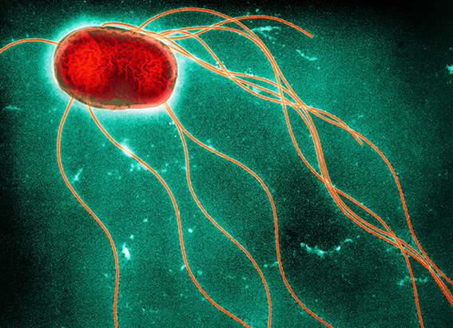

NATIONAL GEOGRAPHIC
COVID can trigger tinnitus. Could the vaccines do the same
SCIENCE
After Gregory Poland, an internal medicine doctor at Mayo Clinic who directs its Vaccine Research Group, got his second dose of COVID vaccine in February 2021 he developed such severe and sudden ringing in his ears that he nearly veered into the next lane of traffic while driving home.
“It sounded like somebody took a whistle and out of nowhere started blowing it in my ear,” Poland said, “and it has never gone away.”
Poland, one of the foremost vaccine researchers in the world and editor in chief of the medical journal Vaccine, is one of thousands of people who believe the ringing, or tinnitus, they developed after a COVID immunization could be linked to the vaccine. The condition is a known consequence of a COVID infection.
Mounting evidence from scientific studies and case reports suggests that there might be a connection between COVID vaccines and rare cases of severe tinnitus. Johnson & Johnson listed it as a possible adverse effect on its U.S. COVID-19 vaccine fact sheet in February 2021. The World Health Organization advised investigating whether there’s a link between multiple COVID vaccines and tinnitus in their first newsletter of 2022. In July 2022, the European Medicines Agency added tinnitus as a possible adverse event from taking the Astra Zeneca vaccine. And Australia updated the Novavax label on January 27 to recognize tinnitus as a potential adverse event.
In the United States, more than 16,000 people have reported developing tinnitus after a COVID vaccine, some within hours and others in the following days or weeks. But, on Wednesday, Martha Sharan, a spokesperson for the Centers for Disease Control and Prevention, said the agency has determined it does “not have sufficient evidence from our surveillance to justify launching an epidemiologic study.”
“We are aware that this is occurring, but tinnitus is a very common condition that has many causes and many risk factors,” Sharan said. “We’re not dismissing it, and we'll continue to monitor it, but there's nothing that shows us that there's a safety problem between COVID-19 [vaccine] and tinnitus.”
The CDC has come under criticism from Poland and others who have asked it to study the issue. Poland said Thursday that he was disappointed with the CDC’s response. “Show me the data, what the threshold is, because what do you do with all of these reports?” Regarding the CDC’s decision not to pursue a larger study at this time, he said, “I'd like to see transparency and how the decision was made.”
But other experts express skepticism that there could be a link between a vaccine and an adverse event that occurs so quickly, including Paul Offit, director of the Vaccine Education Center at Children’s Hospital of Philadelphia and co-developer of the rotavirus vaccine.
“As a general rule, side effects associated with vaccines are associated with the immune response to the vaccine,” he said, explaining that it usually takes at least several days to occur at a level that could cause adverse effects. “What is happening one hour after you get a vaccine to cause you to have tinnitus?”
A phantom sound
Tinnitus affects more than 25 million American adults at some point, according to the American Tinnitus Association, and it’s a symptom of about 200 different disorders, from common colds to more serious conditions. It can also stem from hearing loss or taking different medications. Tinnitus can be temporary or chronic, but there’s no cure and few effective treatments exist.
Studying tinnitus is difficult and there are unique challenges to investigating a possible link.
“Unlike most any other side effect, you can’t measure it, you can’t image it, you can’t do a blood test for it, at least not currently. It’s all subjective,” Poland said. “That makes it more difficult because for clinicians and I’m raising my hand as guilty until it happened to me side effects that I can't see, measure, or even treat, you tend to discount and dismiss. And I think that's what's happening at the CDC level.”
Comments :
- john Very good
- john Very good
Leave a Reply
Your email address will not be published. Required fields are marked*
Related posts:
-
 Dino nuggets ... for dinosaurs A young tyrannosaur’s last meal gives new insight
Dino nuggets ... for dinosaurs A young tyrannosaur’s last meal gives new insightJuvenile tyrannosaurs selected their meals from the Cretaceous version of the kid’s menu, newly analyzed fossils show. While adult “tyrant lizards” were bone-crushers, capable of hunting large prey and reducing carcasses
View article -
Salmonella can be deadly. Here’s how to protect yourself from it.
Salmonella has struck again. Grocery stores across the United States recalled cantaloupes in early December after discovering that whole and pre-sliced portions of the fruit were responsible for illnesses and two deaths
View article -
 800,000 years ago, a huge meteorite hit Earth . Scientists may have just found where.
800,000 years ago, a huge meteorite hit Earth . Scientists may have just found where.In 2011 geologist Kerry Sieh and his husband were shopping in Ho Chi Minh City, Vietnam, when they popped into a little jewelry shop to check out the country’s famous rubies and spinels. But once inside
View article